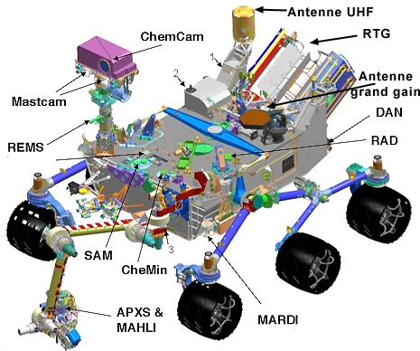

Curiosity
How it is built?
The robot is composed of 6 drive wheels that adapt to every type of ground. Moreover, a mechanical hand is set on it with a geological probe, which can rotate 360°.
What’s more, an on-board camera is integrated on its top, allowing you to see from its point of view.
Indeed, its resolution is 4K and 144Hz, enabling you to control the bot with precision. In addition to these features, it is equipped with a hygrometry system to measure humidity in its environment.
